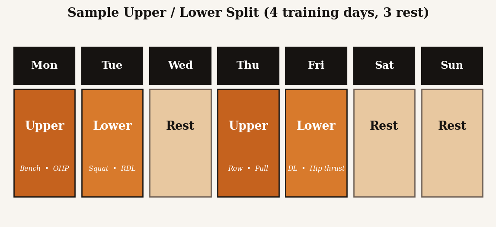
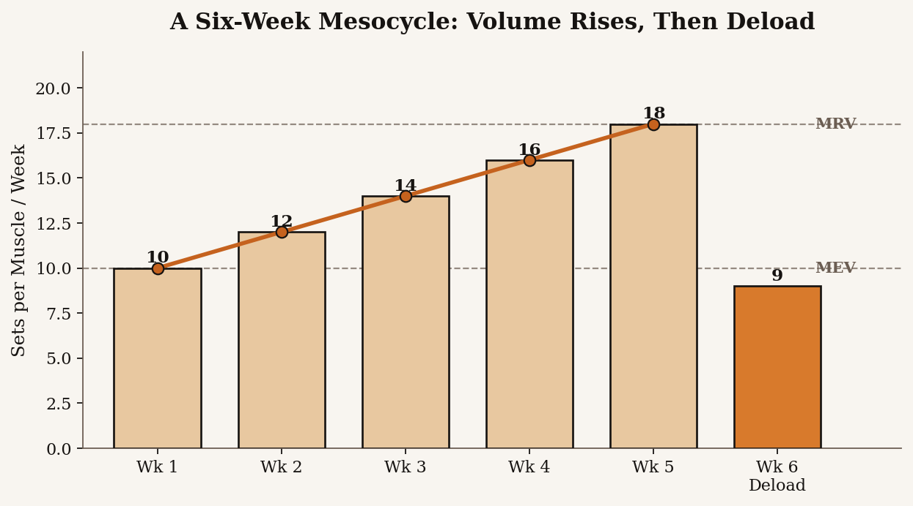

Full Body (3 days)
Hits every muscle group three times a week with moderate volume per session. Best for beginners and busy intermediates. Two to three compounds plus one or two isolation exercises per session is plenty.
Build Muscle. Backed by Science.
Programming is the part where principles meet a calendar. The goal is to spread the work intelligently across the week, push hard for several weeks in a row, then back off long enough to come back stronger. That cycle, repeated indefinitely, is what builds muscle for years instead of months.
The best training split is the one you will actually follow. The two big variables are how many days per week you can lift and how much fatigue you can recover from between sessions. Below are the splits that work for the vast majority of lifters.
Hits every muscle group three times a week with moderate volume per session. Best for beginners and busy intermediates. Two to three compounds plus one or two isolation exercises per session is plenty.
Splits the body in half and trains each half twice a week. The default recommendation for most intermediate lifters because it balances frequency, volume, and recovery without requiring six gym days.
Splits the body into three sessions and runs them once or twice a week. Allows the highest training volume per muscle but demands more time and recovery. Best for advanced lifters with the schedule to support it.

Programming on paper does not mean much if execution is sloppy in the gym. The clip below illustrates what good barbell setup and bracing looks like — the same mechanics apply across squat, deadlift, and overhead pressing variations.
Six-second animated demonstration of the squat sequence: setup, descend, brace at the bottom, drive back up. Original animation rendered in matplotlib + ffmpeg using the HyperForge color palette.
A mesocycle is a training block of about four to six weeks that follows a single goal — usually accumulating volume to drive growth. The structure is simple: start the block near MEV (minimum effective volume) for each muscle, add a set or two per muscle per week, ride the volume curve up toward MRV (maximum recoverable volume) by the final week, then deload.

Inside the mesocycle, you should also be progressing on individual lifts: adding a rep, adding weight, or improving the quality of the working sets. The volume increase across the block and the per-lift progress within sessions are two layers of progressive overload happening in parallel.
After a few weeks of pushing volume up, fatigue starts to outpace adaptation. The signs are familiar: weights feel heavier, sleep gets worse, motivation drops, joints ache. That is the cue for a deload week, where you cut volume by roughly half and intensity by about ten percent and use the week to come back fresh.
The mistake most lifters make is treating deloads as a sign of weakness. Deloads are a programming feature. Skipping them turns productive fatigue into stalled progress and, eventually, an injury that forces a much longer break than the deload would have cost.
A typical training year for a serious lifter looks like a stack of four-to-six week mesocycles, each one ending in a deload, repeated across the calendar. The split, the exercise selection, and the volume targets within each block come from Training Principles and Exercise Selection. Programming is where you tie all of that into a schedule you can run.
If you have specific questions about how to apply any of this to your own training, the Contact page has a form you can use to reach out.